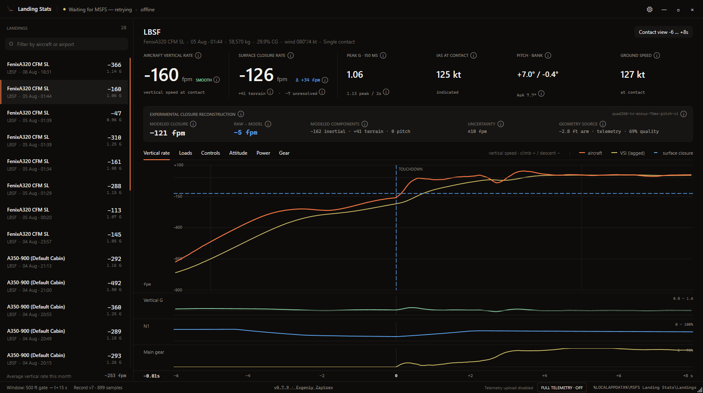

Two landing rates, clearly separated
Aircraft vertical motion and the simulator's surface-relative touchdown value are kept distinct, with terrain contribution and uncertainty shown instead of hidden.
A Windows application for Microsoft Flight Simulator 2024 that records the approach from 500 ft AGL, analyzes every contact, and shows synchronized traces for motion, loads, controls, power, attitude, and landing gear.

Aircraft vertical motion and the simulator's surface-relative touchdown value are kept distinct, with terrain contribution and uncertainty shown instead of hidden.
Normal landings and bounces are analyzed per contact, with declared G-load windows and time-aligned black-box traces.
Landing analysis and history live on the user's computer. Diagnostic telemetry is sent only after the user explicitly selects Report bug.
Users may connect Google Drive to synchronize saved landings and selected preferences. The app requests only the narrow drive.file permission.
Google Drive backup is optional. MSFS Landing Stats uses Google data only to provide backup and synchronization requested by the user. It does not access unrelated Drive files, sell data, use it for advertising, or send Drive contents to the project author. See the complete privacy policy.